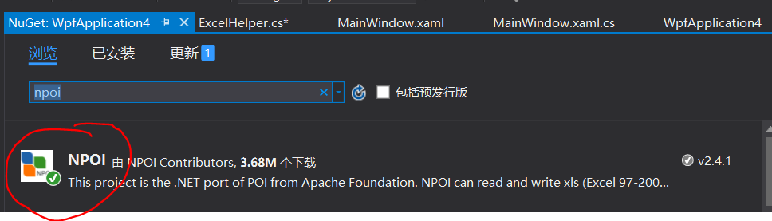

使用VisualStudio，打开NuGet包管理器，搜索NPOI，并添加到当前项目。

因为一个Excel文件可以有多个sheet页，所以C#方法最好使用与Excel文档结构相对应的DataSet类，即将DataSet（可以包含多个DataTable）导出为Excel，DataSet中的每个DataTabel对应一个Excel中的Sheet页。
方法解释：此方法将一个Excel文件导入为一个DataSet，Excel中每个Sheet页都会生成一个DataTable存放在导入的DataSet中，并且每个DataTable的TableName与每个Sheet的SheetName一一对应。参数isFirstLineColumnName用来表示Excel文件各表第一行是否为表头。
代码如下：
/// <summary>
/// 读取Execl数据到DataTable(DataSet)中
/// </summary>
/// <param name="filePath">指定Execl文件路径</param>
/// <param name="isFirstLineColumnName">设置第一行是否是列名</param>
/// <returns>返回一个DataTable数据集</returns>
public static DataSet ExcelToDataSet(string filePath, bool isFirstLineColumnName)
{
DataSet dataSet = new DataSet();
int startRow = 0;
try
{
using (FileStream fs = File.OpenRead(filePath))
{
IWorkbook workbook = null;
// 如果是2007+的Excel版本
if (filePath.IndexOf(".xlsx") > 0)
{
workbook = new XSSFWorkbook(fs);
}
// 如果是2003-的Excel版本
else if (filePath.IndexOf(".xls") > 0)
{
workbook = new HSSFWorkbook(fs);
}
if (workbook != null)
{
//循环读取Excel的每个sheet，每个sheet页都转换为一个DataTable，并放在DataSet中
for (int p = 0; p < workbook.NumberOfSheets; p++)
{
ISheet sheet = workbook.GetSheetAt(p);
DataTable dataTable = new DataTable();
dataTable.TableName = sheet.SheetName;
if (sheet != null)
{
int rowCount = sheet.LastRowNum;//获取总行数
if (rowCount > 0)
{
IRow firstRow = sheet.GetRow(0);//获取第一行
int cellCount = firstRow.LastCellNum;//获取总列数
//构建datatable的列
if (isFirstLineColumnName)
{
startRow = 1;//如果第一行是列名，则从第二行开始读取
for (int i = firstRow.FirstCellNum; i < cellCount; ++i)
{
ICell cell = firstRow.GetCell(i);
if (cell != null)
{
if (cell.StringCellValue != null)
{
DataColumn column = new DataColumn(cell.StringCellValue);
dataTable.Columns.Add(column);
}
}
}
}
else
{
for (int i = firstRow.FirstCellNum; i < cellCount; ++i)
{
DataColumn column = new DataColumn("column" + (i + 1));
dataTable.Columns.Add(column);
}
}
//填充行
for (int i = startRow; i <= rowCount; ++i)
{
IRow row = sheet.GetRow(i);
if (row == null) continue;
DataRow dataRow = dataTable.NewRow();
for (int j = row.FirstCellNum; j < cellCount; ++j)
{
ICell cell = row.GetCell(j);
if (cell == null)
{
dataRow[j] = "";
}
else
{
//CellType(Unknown = -1,Numeric = 0,String = 1,Formula = 2,Blank = 3,Boolean = 4,Error = 5,)
switch (cell.CellType)
{
case CellType.Blank:
dataRow[j] = "";
break;
case CellType.Numeric:
short format = cell.CellStyle.DataFormat;
//对时间格式（2015.12.5、2015/12/5、2015-12-5等）的处理
if (format == 14 || format == 31 || format == 57 || format == 58)
dataRow[j] = cell.DateCellValue;
else
dataRow[j] = cell.NumericCellValue;
break;
case CellType.String:
dataRow[j] = cell.StringCellValue;
break;
}
}
}
dataTable.Rows.Add(dataRow);
}
}
}
dataSet.Tables.Add(dataTable);
}
}
}
return dataSet;
}
catch (Exception)
{
return null;
}
}
代码解释：我们可以将要导出的DataTable都放入一个DataSet中，将DataSet导出为Excel文件，方法参数OutPath用来传入导出Excel文件的路径，路径可以加Excel的扩展名（.xls或.xlsx），也可以不加，不加默认导出Excel文件扩展名为.xls。
/// <summary>
/// 将DataTable(DataSet)导出到Execl文档
/// </summary>
/// <param name="dataSet">传入一个DataSet</param>
/// <param name="Outpath">导出路径（可以不加扩展名，不加默认为.xls）</param>
/// <returns>返回一个Bool类型的值，表示是否导出成功</returns>
/// True表示导出成功，Flase表示导出失败
public static bool DataTableToExcel(DataSet dataSet, string Outpath)
{
bool result = false;
try
{
if (dataSet == null || dataSet.Tables == null || dataSet.Tables.Count == 0 || string.IsNullOrEmpty(Outpath))
throw new Exception("输入的DataSet或路径异常");
int sheetIndex = 0;
//根据输出路径的扩展名判断workbook的实例类型
IWorkbook workbook = null;
string pathExtensionName = Outpath.Trim().Substring(Outpath.Length - 5);
if (pathExtensionName.Contains(".xlsx"))
{
workbook = new XSSFWorkbook();
}
else if(pathExtensionName.Contains(".xls"))
{
workbook = new HSSFWorkbook();
}
else
{
Outpath = Outpath.Trim() + ".xls";
workbook = new HSSFWorkbook();
}
//将DataSet导出为Excel
foreach (DataTable dt in dataSet.Tables)
{
sheetIndex++;
if (dt != null && dt.Rows.Count > 0)
{
ISheet sheet = workbook.CreateSheet(string.IsNullOrEmpty(dt.TableName) ? ("sheet" + sheetIndex) : dt.TableName);//创建一个名称为Sheet0的表
int rowCount = dt.Rows.Count;//行数
int columnCount = dt.Columns.Count;//列数
//设置列头
IRow row = sheet.CreateRow(0);//excel第一行设为列头
for (int c = 0; c < columnCount; c++)
{
ICell cell = row.CreateCell(c);
cell.SetCellValue(dt.Columns[c].ColumnName);
}
//设置每行每列的单元格,
for (int i = 0; i < rowCount; i++)
{
row = sheet.CreateRow(i + 1);
for (int j = 0; j < columnCount; j++)
{
ICell cell = row.CreateCell(j);//excel第二行开始写入数据
cell.SetCellValue(dt.Rows[i][j].ToString());
}
}
}
}
//向outPath输出数据
using (FileStream fs = File.OpenWrite(Outpath))
{
workbook.Write(fs);//向打开的这个xls文件中写入数据
result = true;
}
return result;
}
catch (Exception ex)
{
return false;
}
}
}
将上面两个方法都定义在ExcelHelper类中，使用如下代码使用：
DataSet set = ExcelHelper.ExcelToDataTable("test.xlsx", true);//Excel导入
bool b = ExcelHelper.DataTableToExcel(set, "test2.xlsx");//导出Excel